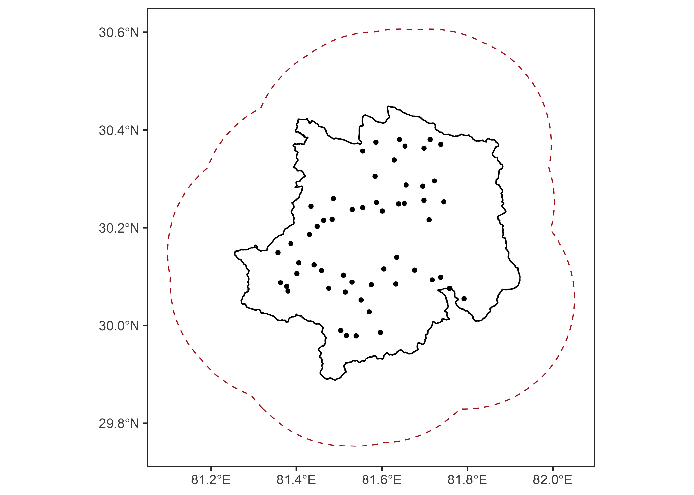
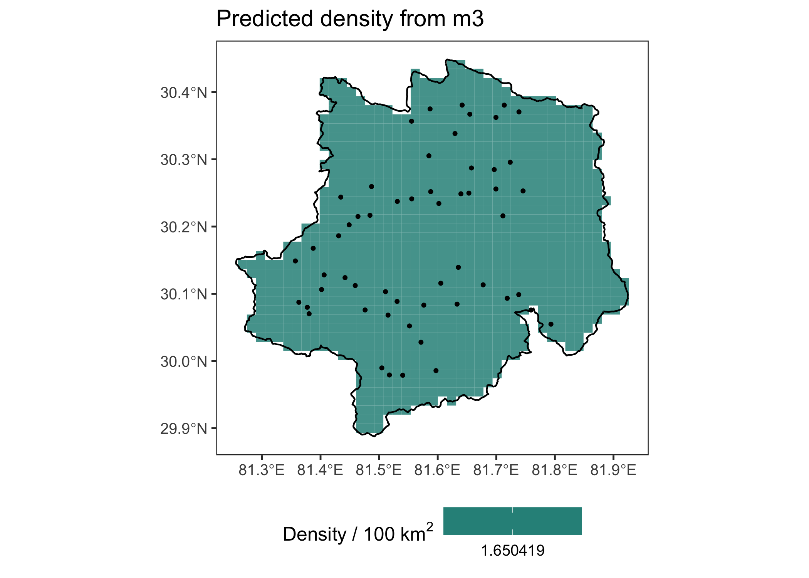
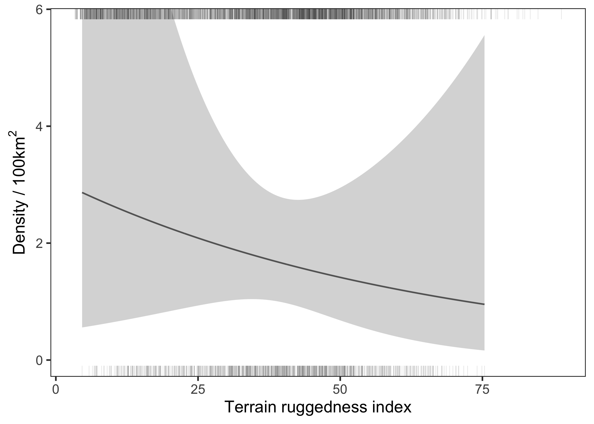
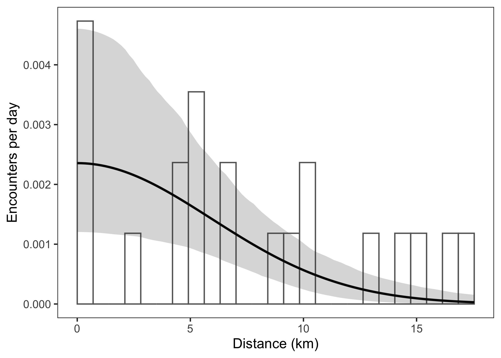

# Packages needed
library(dplyr)
library(secr)
library(sf)
library(ggplot2)
library(MASS)
source("namkha_basic/code/more-utilities.R")
results_dir <- "namkha_basic/output/results"
dir.create(results_dir, recursive = TRUE, showWarnings = FALSE)Summarise model results
1 Covered in this tutorial
- Load fitted SECR models and mask objects
- Build an AIC, abundance, and density summary table
- Choose the model with the lowest AICc for mapping
- Map the survey region and predicted density surface
- Save predicted density as a shapefile
- Plot density and detection covariate effects
2 Introduction
This tutorial turns fitted models into outputs that are useful for reporting and checking results. The model-fitting tutorial saved six fitted models. Here we compare them, estimate abundance over the Namkha survey area, convert abundance to density, create maps, and plot fitted covariate relationships.
There are two different spatial regions to keep in mind. The models were fitted using mask_model, the trap-buffer mask. Abundance and density are summarised over mask_survey_area, the mask restricted to the Namkha survey area. This distinction matters because model fitting needs to include possible activity centres around the traps, while reporting often focuses on a defined survey region.
3 Preparations
We load the packages used for summarising, mapping, and plotting results. The script also sources more-utilities.R, which contains helper functions used for detection-function plots.
4 Load fitted models and masks
The objects loaded here come from the previous scripts: the capture history, masks, and fitted models. We then put the models into a named list so that the same code can be applied to each model.
# Load the objects created in earlier scripts
load("namkha_basic/output/namkha_basic_secr_inputs_capthist.RData")
load("namkha_basic/output/namkha_basic_secr_inputs_mask.RData")
load("namkha_basic/output/namkha_basic_fitted_models.RData")
# Put fitted models in one named list for easy looping
fitted_models <- list(
m0 = m0,
m1 = m1,
m2 = m2,
m3 = m3,
m4 = m4,
m5 = m5
)The extrapolation mask defines the region over which abundance and density are summarised. Here we use the survey-area mask. The area is calculated from the number of mask points and the mask cell area stored by secr.
# Mask to use when estimating abundance and density, and maps
extrap_mask <- mask_survey_area
# `mask_model` was used for fitting, but abundance is extrapolated to `extrap_mask`
survey_area_km2 <- nrow(extrap_mask) * attr(extrap_mask, "area") / 100
survey_area_km2[1] 24125 AIC, abundance, and density
region.N() estimates abundance over a specified region. We use it to estimate abundance over the Namkha survey-area mask for every fitted model. The script extracts expected abundance (E.N) by default.
# Function to extract abundance estimates from secr's region.N
# abundance = E.N (expected abundance) or R.N (realised abundance)
extract_abundance = function(model_name, abundance = c("E.N")) {
rn <- region.N(fitted_models[[model_name]], region = extrap_mask)
data.frame(
modelname = model_name,
estimate = rn[abundance, "estimate"],
SE.estimate = rn[abundance, "SE.estimate"],
lcl = rn[abundance, "lcl"],
ucl = rn[abundance, "ucl"]
)
}The abundance estimates are converted to density by dividing by the survey-area mask size in square kilometres. The resulting density is in animals per square kilometre.
# Estimate abundance for each fitted model over the survey area
abundance_table <- lapply(
names(fitted_models),
extract_abundance
) %>%
bind_rows()
# Add density = abundance / area
abundance_table <- abundance_table %>%
mutate(
D = estimate / survey_area_km2,
Dlcl = lcl / survey_area_km2,
Ducl = ucl / survey_area_km2,
CV = 100 * SE.estimate / estimate
)
abundance_table modelname estimate SE.estimate lcl ucl D Dlcl
1 m0 39.43203 10.097822 24.06157 64.62109 0.01634827 0.009975776
2 m1 38.94529 9.789949 23.97462 63.26422 0.01614647 0.009939726
3 m2 39.30222 9.960437 24.10148 64.09002 0.01629445 0.009992320
4 m3 39.80810 10.261072 24.21485 65.44269 0.01650419 0.010039323
5 m4 40.35744 10.540280 24.39325 66.76941 0.01673194 0.010113290
6 m5 42.00740 11.312175 25.00953 70.55795 0.01741600 0.010368794
Ducl CV
1 0.02679149 25.60817
2 0.02622895 25.13770
3 0.02657132 25.34320
4 0.02713213 25.77634
5 0.02768218 26.11731
6 0.02925288 26.92901Next we combine the abundance table with an AICc table. AICc is a small-sample corrected version of AIC. The table is saved as a CSV so it can be used directly in reports or checked outside R.
# Add AIC results and combine them with abundance and density
aic_table <- AIC(m0, m1, m2, m3, m4, m5, criterion = "AICc") %>%
mutate(modelname = row.names(.)) %>%
left_join(abundance_table, by = "modelname")
# Save the combined summary table
write.csv(
aic_table %>%
dplyr::select(modelname, model, AIC, AICc, dAICc, AICcwt, estimate, lcl, ucl, D, Dlcl, Ducl, CV),
file = file.path(results_dir, "namkha_basic_results_abundance_AIC.csv"),
row.names = FALSE
)
aic_table %>%
dplyr::select(modelname, model, AICc, dAICc, AICcwt, estimate, lcl, ucl, D, Dlcl, Ducl, CV) modelname model
1 m3 D~1 lambda0~valley_stream sigma~1
2 m4 D~std_tri lambda0~valley_stream sigma~1
3 m0 D~1 lambda0~1 sigma~1
4 m5 D~std_tri + std_d2hydro lambda0~cliff + valley_stream sigma~1
5 m1 D~std_tri lambda0~1 sigma~1
6 m2 D~std_d2hydro lambda0~1 sigma~1
AICc dAICc AICcwt estimate lcl ucl D Dlcl
1 221.908 0.000 0.6465 39.80810 24.21485 65.44269 0.01650419 0.010039323
2 224.937 3.029 0.1422 40.35744 24.39325 66.76941 0.01673194 0.010113290
3 225.371 3.463 0.1145 39.43203 24.06157 64.62109 0.01634827 0.009975776
4 227.657 5.749 0.0365 42.00740 25.00953 70.55795 0.01741600 0.010368794
5 227.980 6.072 0.0311 38.94529 23.97462 63.26422 0.01614647 0.009939726
6 228.098 6.190 0.0293 39.30222 24.10148 64.09002 0.01629445 0.009992320
Ducl CV
1 0.02713213 25.77634
2 0.02768218 26.11731
3 0.02679149 25.60817
4 0.02925288 26.92901
5 0.02622895 25.13770
6 0.02657132 25.34320For the maps and covariate-effect plots below, we use the model with the lowest AICc.
# Use the model with the lowest AICc for the density surface map
best_model_name <- aic_table$modelname[which.min(aic_table$AICc)]
best_model <- fitted_models[[best_model_name]]
best_model_name[1] "m3"6 Map the survey region
We first make a simple map showing the Namkha survey boundary, the trap-buffer region, and the camera locations. This is useful for checking the spatial relationship between the reporting area and the fitting region.
# Convert traps and the survey area boundary to sf objects for plotting
traps_sf <- st_as_sf(traps, coords = c("x", "y"), crs = my_crs)
survey_area_sf <- st_as_sf(survey_area)
# Plot the Namkha boundary, the trap-buffer region, and the camera locations
survey_region_plot <- ggplot() +
geom_sf(data = survey_area_sf, fill = NA, colour = "black", linewidth = 0.5) +
geom_sf(data = st_as_sf(all_sess_masks), fill = NA, colour = "firebrick", linewidth = 0.4, linetype = 2) +
geom_sf(data = traps_sf, colour = "black", size = 1.1) +
labs(x = NULL, y = NULL) +
theme_bw(base_size = 12) +
theme(panel.grid = element_blank())
survey_region_plot
7 Predict and map density
predictDsurface() predicts density over the extrapolation mask. secr returns density in animals per hectare, so the script multiplies by 10,000 to express density as animals per 100 km2.
# Predict density over the Namkha survey area
pred_surface <- predictDsurface(best_model, mask = extrap_mask, cl.D = FALSE)For plotting, the mask points are converted into square cells. Each square is centred on a mask point and has side length equal to the mask spacing.
# Convert mask points to square cells so the predicted density is easier to plot
density_cells <- st_as_sf(data.frame(extrap_mask), coords = c("x", "y"), crs = my_crs)
density_cells <- st_buffer(
density_cells,
dist = attr(extrap_mask, "spacing") / 2,
endCapStyle = "SQUARE",
nQuadSegs = 1
)
# Convert density from animals per hectare to animals per 100 km2
density_cells$D_per_100km2 <- covariates(pred_surface)[, "D.0"] * 10000# Plot predicted density together with the survey boundary and trap locations
density_plot <- ggplot() +
geom_sf(data = density_cells, aes(fill = D_per_100km2), colour = NA, alpha = 0.85) +
geom_sf(data = survey_area_sf, fill = NA, colour = "black", linewidth = 0.5) +
geom_sf(data = traps_sf, colour = "black", size = 0.8) +
scale_fill_viridis_c(name = expression("Density / 100 km"^2), option = "D") +
labs(x = NULL, y = NULL, title = paste("Predicted density from", best_model_name)) +
theme_bw(base_size = 12) +
theme(panel.grid = element_blank(), legend.position = "bottom")
density_plot
The survey-region and density maps are saved as PNG files. The density surface is also saved as a shapefile so it can be opened in GIS software.
# Save survey and density maps
ggsave(
filename = file.path(results_dir, "namkha_basic_survey_region.png"),
plot = survey_region_plot,
width = 7,
height = 5,
dpi = 200
)
ggsave(
filename = file.path(results_dir, "namkha_basic_predicted_density.png"),
plot = density_plot,
width = 7,
height = 5,
dpi = 200
)
# Save the predicted density surface as a shapefile for later mapping
st_write(
density_cells %>% dplyr::select(D_per_100km2),
dsn = file.path(results_dir, "namkha_basic_predicted_density.shp"),
delete_layer = TRUE,
quiet = TRUE
)8 Plot density covariate effects
The next section plots the fitted relationship between density and a selected density covariate. For this example we use m5, because it includes std_tri in the density model and includes detector covariates in the encounter-rate model. The AICc-best model above is still used for the main abundance table and density map.
# User sets the model to make plot for
covplot_model <- m5
# Identify which covariates appear in the density part of the chosen model
model_covs <- covplot_model$betanames
dens_covs <- sub("^D\\.", "", model_covs[grepl("^D\\.", model_covs)])
dens_covs[1] "std_tri" "std_d2hydro"# User sets the density covariate to plot.
# Any other density covariates in the same model will be held constant.
focal_cov = "std_tri"
focal_cov_full_name = "Terrain ruggedness index"
# Stop if the chosen covariate is not actually used in the density model
if (!(focal_cov %in% dens_covs)) {
stop("focal_cov must be a density covariate in chosen model.")
}The plot is built by creating a sequence of values for the focal covariate and predicting density at those values. If the model uses a standardised covariate, the x-axis is converted back to the original covariate scale for easier interpretation.
# Build a sequence of values for the focal covariate across its range in the
# extrapolation mask. These values will form the x-axis of the plot.
newdata <- data.frame(
focal_values = seq(
min(covariates(extrap_mask)[, focal_cov], na.rm = TRUE),
max(covariates(extrap_mask)[, focal_cov], na.rm = TRUE),
length.out = min(500, nrow(extrap_mask))
)
)
names(newdata)[1] <- focal_cov
# Keep track of both the model-scale covariate name and the version to display
# on the plot. If the model uses a standardized covariate, the plot can still
# show the original unstandardized values for easier interpretation.
focal_cov_unstd <- sub("^std_", "", focal_cov)
plot_cov <- focal_cov
# If the focal covariate is standardized, also create the original-scale
# version so the x-axis is easier to interpret.
if (startsWith(focal_cov, "std_") && focal_cov_unstd %in% scaling_df$cov) {
focal_mean <- scaling_df[scaling_df$cov == focal_cov_unstd, "mean"]
focal_sd <- scaling_df[scaling_df$cov == focal_cov_unstd, "sd"]
newdata[[focal_cov_unstd]] <- newdata[[focal_cov]] * focal_sd + focal_mean
plot_cov <- focal_cov_unstd
}If the density model contains additional covariates, they are held constant while the focal covariate varies.
# For any additional density covariates in the model, hold them constant across
# the plot. Continuous covariates are set to their mean and lower-cardinality
# covariates are set to their most common value.
other_dens_covs <- setdiff(dens_covs, focal_cov)
for (covname in other_dens_covs) {
x <- covariates(extrap_mask)[, covname]
x <- x[!is.na(x)]
# Use the mean for continuous covariates
if (is.numeric(x) && length(unique(x)) > 5) {
newdata[[covname]] <- mean(x)
} else {
# Use the mode for categorical or low-cardinality covariates
x_unique <- unique(x)
x_mode <- x_unique[which.max(tabulate(match(x, x_unique)))]
newdata[[covname]] <- x_mode
}
}Predictions are made using a temporary mask because predictDsurface() expects mask-like input.
# Predicted densities at different levels of focal covariate.
# Use a temporary mask so predictDsurface can evaluate the density model
# using the same type of object as in the fitted analysis.
pred_mask <- subset(extrap_mask, subset = seq_len(nrow(extrap_mask)) <= nrow(newdata))
# Replace the covariate values in the temporary mask with the values we want
# to predict over
for (covname in names(newdata)) {
covariates(pred_mask)[, covname] <- newdata[[covname]]
}
# Predict density and convert to animals per 100 km2 for plotting
tmp <- predictDsurface(covplot_model, mask = pred_mask, cl.D = TRUE)
newdata$est <- 10000 * covariates(tmp)[, "D.0"]
newdata$lcl <- 10000 * covariates(tmp)[, "lcl.0"]
newdata$ucl <- 10000 * covariates(tmp)[, "ucl.0"]
# Set an upper y-axis limit for the plot
ymax = min(max(newdata$est * 2), max(newdata$ucl))The rugs show the covariate values available in the fitting mask and the extrapolation mask. This helps identify whether predictions are being made outside the range of covariate values sampled by the camera array.
# Extract covariate values on mask and extrapolation region to see if you
# are extrapolating into new covariate spaces
x_surveyed <- data.frame(xt = c(covariates(mask_model)[, plot_cov]))
x_full <- data.frame(xt = c(covariates(extrap_mask)[, plot_cov]))
# Plot fitted density against the focal covariate. Rugs at the top and bottom
# show where covariate values occur in the fitting mask and full extrapolation
# mask, which helps identify extrapolation beyond the sampled covariate range.
pD = newdata %>%
ggplot(aes(x = .data[[plot_cov]], y = est)) +
geom_line(colour = "black") +
geom_ribbon(aes(ymin = lcl, ymax = ucl), fill = "grey70", colour = NA, alpha = 0.5) +
geom_rug(data = x_full, inherit.aes = FALSE, aes(x = xt), sides = "b", alpha = 0.1, size = 0.25) +
geom_rug(data = x_surveyed, inherit.aes = FALSE, aes(x = xt), sides = "t", alpha = 0.1, size = 0.25) +
labs(x = focal_cov_full_name, y = bquote("Density / 100km"^2)) +
theme_bw(base_size = 14) +
coord_cartesian(ylim = c(0, ymax)) +
theme(panel.grid = element_blank(),
strip.background = element_rect(fill = "white")
)
# Display the density covariate plot in the plotting window
pD
# Save the density covariate plot for later reference
ggsave(file.path(results_dir, "namkha_Dcovs.png"), pD, width=9, height=3.5, dpi = 300)9 Plot detection covariate effects
The final section plots the fitted encounter-rate curve for selected detector covariate values. This combines the fitted detection function with a histogram showing the observed distribution of recapture distances calculated from secr’s moves function. This histogram should be interpreted with caution because within any occasion the sequence of detections is arbitrary, and therefore other recapture distances are possible. While the histogram should be removed for published results, it can be useful to visually compare the encounter rate function with the kinds of between-trap movements that have been recorded.
# Identify which covariates appear in the encounter-rate part of the chosen model
lam0_covs <- sub("^lambda0\\.", "", model_covs[grepl("^lambda0\\.", model_covs)])
lam0_covs[1] "cliff" "valley_stream"# User sets possible values for any lambda0 covariates
# In same order as lam0_covs
lam0_covs_vals <- c(0, 0)
# Stop if the user has not supplied one value per lambda0 covariate
if (length(lam0_covs_vals) != length(lam0_covs)) {
stop("lam0_covs_vals must be the same length as lam0_covs.")
}# Calculate the encounter-rate function for the chosen
# model and the user-specified lambda0 covariate values
ecd <- plot_detfunction(
model = covplot_model,
nd = 100,
nbins = 25,
lam0_covs_vals = lam0_covs_vals
)
# Plot the observed distribution of recapture distances together with the
# fitted encounter-rate curve and its confidence interval
ec1 = ggplot() +
geom_col(data = ecd$hist,
aes(x = xmid/1000, y = height),
width = ecd$hist$width[1]/1000,
fill = "white", colour = "grey40") +
geom_line(data = ecd$detfun,
aes(x = d/1000, y = e.est), linewidth = 1.1) +
geom_ribbon(data = ecd$detfun,
aes(x = d/1000, ymin = e.lcl, ymax = e.ucl),
alpha = .2) +
xlab("Distance (km)") + ylab("Encounters per day") +
theme_bw(base_size = 14) +
theme(panel.grid = element_blank(),
strip.background = element_rect(fill = "white"))
# Display the plot in the plotting window
ec1
# Save the detection covariate plot for later reference
ggsave(file.path(results_dir, "namkha_Ecovs.png"), ec1, width=9, height=4.5, dpi = 300)10 What comes next
The saved CSV, PNG files, and shapefile are the main outputs from the basic workflow. They provide a compact model comparison table, abundance and density estimates, a predicted density map, and diagnostic covariate-effect plots.